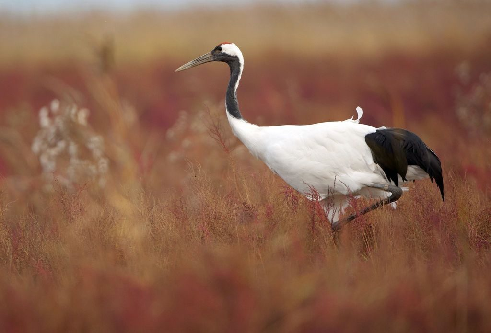
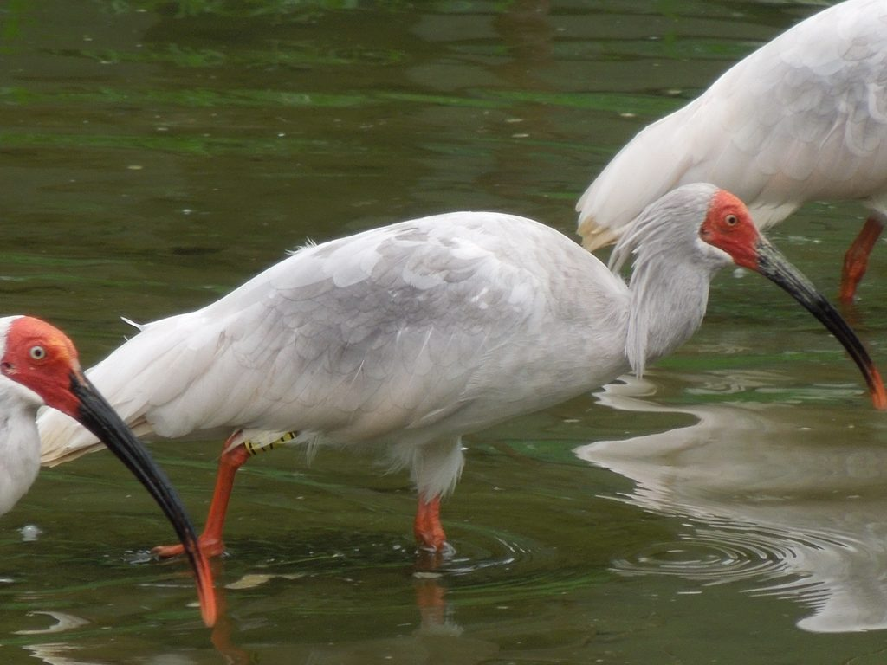
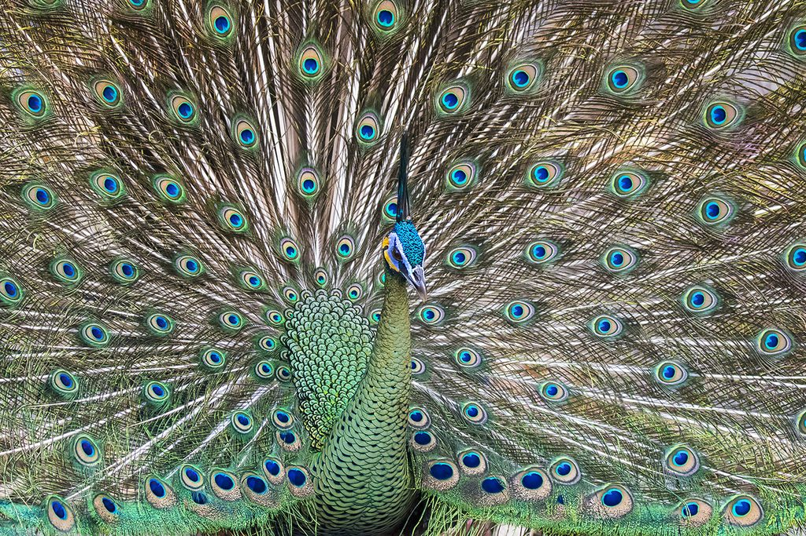
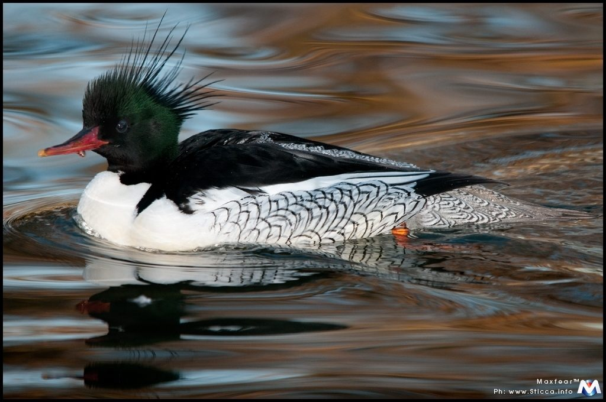
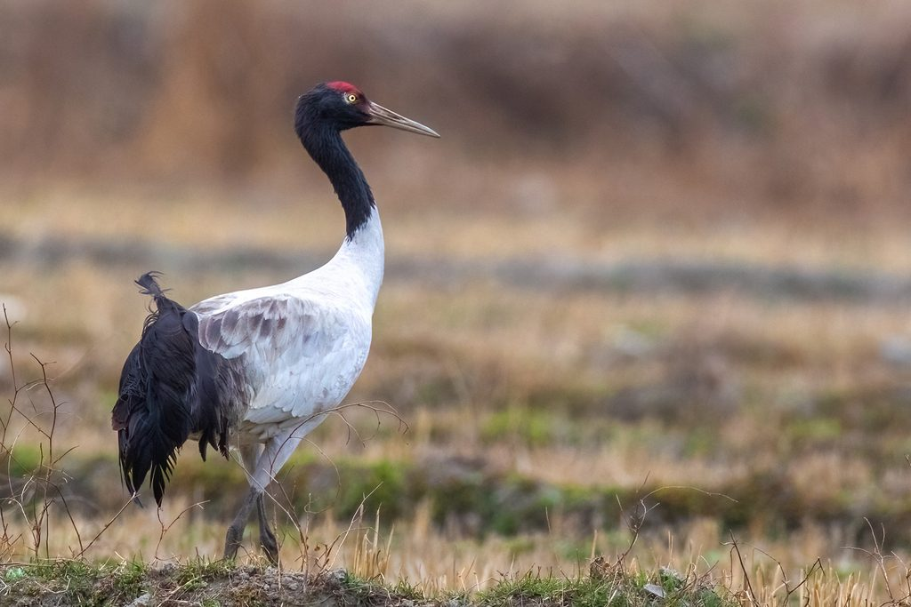
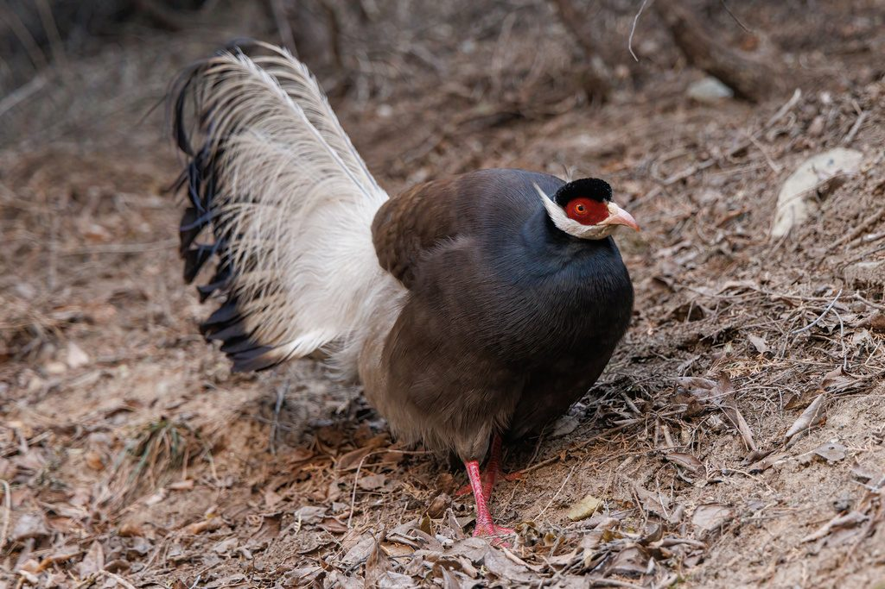
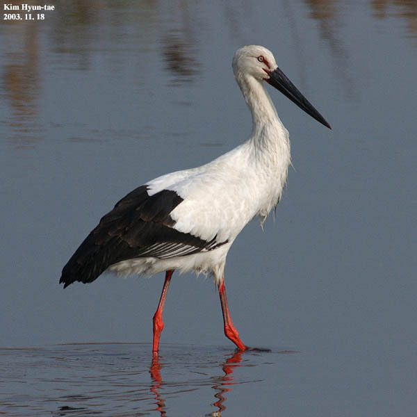
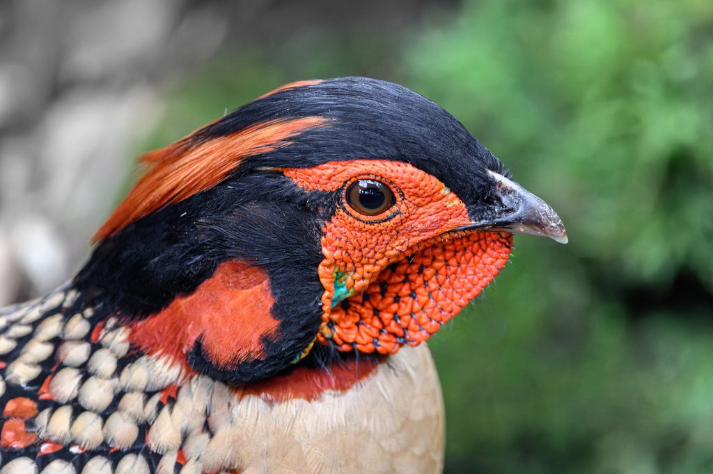
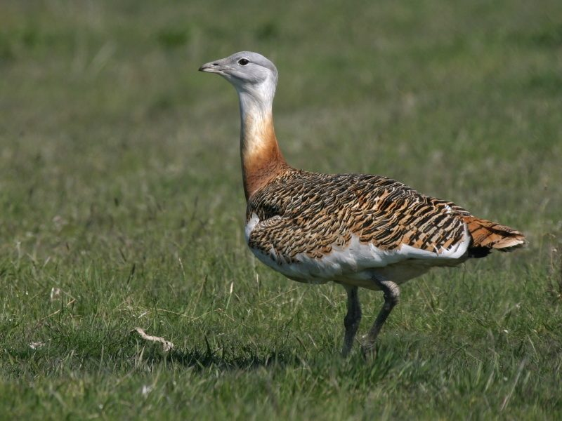
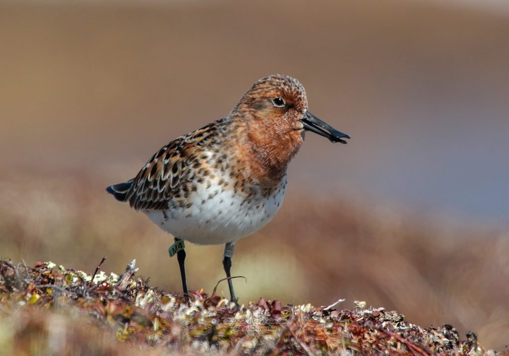

国家一级丹顶鹤
Grus japonensis
栖息地：芦苇沼泽 · 浅水湿地
通体雪白，头顶裸出朱红，颈侧与次级飞羽墨黑，被誉为「湿地之神」。全球野生种群约三千只，是东亚湿地的旗舰物种。
小鸟张开双翅从头顶的天空飞过；
也停在窗边叽叽喳喳，
你每次停下脚步看鸟的那几秒,
也是一次心灵的对焦。
在自然里，
你可以不做社会人，
只当一个普通的地球公民。
倾听鸟鸣，世界就不再只是背景噪音，
而是一首有逻辑自洽的长诗。
Why it matters
鸟类是环境变化最敏感的指示物种。它们的数量变化，往往比任何仪器都更早地告诉我们：
水变脏了、林子少了、滩涂不见了
保护鸟类，从来不只是为了鸟
鹤类、鹳类依赖完整的湿地水系。一片沼泽被抽干，消失的不只是鸟，还有调蓄洪水与净化水源的能力。
候鸟每年往返数千公里，沿途任意一站被破坏，整条迁徙链路都会断裂。保护需要跨国界、跨代际的协作。
它们不是资源，不是装饰，也不是「珍稀」标签下的收藏品。生命平等，是保护行动最朴素的出发点。
Field Guide
中国的鸟类可以划分为六大生态类群：
游禽：善于游泳，趾间有蹼，如鸳鸯；
涉禽：嘴长，颈长，后肢长，通常在浅滩中捕食，如白鹭；
陆禽：善于在地面奔走，如斑鸠；
猛禽：善于飞翔，性情凶猛，嘴呈钩状，吃动物或腐肉，如鹰；
攀禽：善于攀援，如啄木鸟；
鸣禽：善于鸣叫，如山雀。
以下十种鸟类为中国国家一级重点保护野生动物。它们曾遍布山野，如今只在少数几个地方被记录下来

国家一级Grus japonensis
栖息地：芦苇沼泽 · 浅水湿地
通体雪白，头顶裸出朱红，颈侧与次级飞羽墨黑，被誉为「湿地之神」。全球野生种群约三千只，是东亚湿地的旗舰物种。

国家一级Nipponia nippon
栖息地：山地溪流 · 冬水田
羽色由灰白渐染朱红，面颊裸出如霞。1981 年野外仅存七只，在中国洋县被重新发现；四十余年守护，种群已恢复至近万只。

国家一级Pavo muticus
栖息地：热带季雨林 · 河谷
中国唯一的原生孔雀，羽色翠绿泛金，鳞状羽纹如甲。它是中国传统文化中「孔雀」的真正原型，野外数量已不足六百只。

国家一级Mergus squamatus
栖息地：山地溪流 · 水库
胁部鳞状黑斑、脑后冠羽飘逸，被称为「鸟类活化石」，已在地球上生存逾千万年。对水质极度挑剔，是河流健康的活体指标。

国家一级Grus nigricollis
栖息地：高原沼泽 · 草甸
唯一在高原繁殖的鹤类，头颈墨黑，常在青藏高原的湖泊与沼泽之间迁徙。它们的迁徙路线，是高原上最古老的路标。

国家一级Crossoptilon mantchuricum
栖息地：华北山地针阔混交林
中国特有物种。耳部丛生白色羽簇，尾羽高翘如马尾，古称「鹖」，被视作勇武不屈的象征，也曾因羽饰贸易而濒临绝境。

国家一级Ciconia boyciana
栖息地：湿地 · 浅水沼泽
体羽纯白，翅羽墨黑泛绿光，喙长而粗壮。全球种群仅数千只，繁殖地高度集中，任何一处湿地的消失都可能牵动整个物种。

国家一级Tragopan caboti
栖息地：亚热带常绿阔叶林
中国特有。雄鸟面部裸出绚丽的蓝橙色肉质角突，繁殖期展开如盛装。它们终年不迁徙，一片林子被砍，一个种群便随之消失。

国家一级Otis tarda
栖息地：草原 · 半荒漠农田
体重可逾十五公斤，是现存能飞行的最重鸟类之一。因体型笨重而极易被猎杀，如今在中国仅剩零星越冬群体。

国家一级Calidris pygmaea
栖息地：沿海滩涂 · 河口
喙端膨大如勺，是它独一无二的签名。全球仅存约六百只，每年往返繁殖地与越冬地数千公里，而中途的每一片滩涂都在被填埋。
这十种鸟，多数人一生也未必见到一次。
但在广西，七百多种鸟里有许多，就住在你家窗外的树上。
The cost of silence
没有警报，没有碑文。只是在某一个春天，某一片芦苇荡里，少了一次起飞。